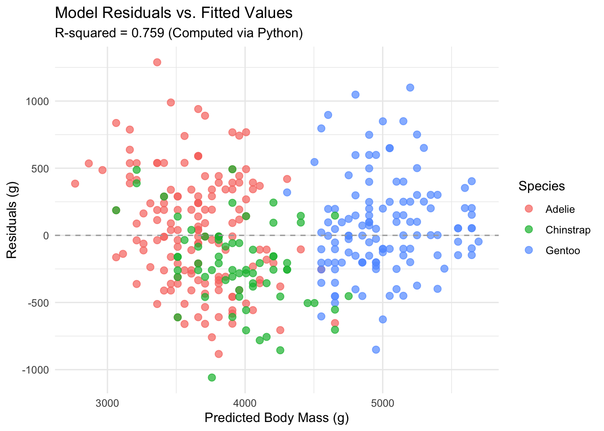

# Load reticulate to enable interoperability between R and Python
library(reticulate)
library(ggplot2)
library(dplyr)Polyglot Data Science: Interoperable Analysis with R and Python
“Apply the bonus marks to Milestone 2.”
Introduction
This post demonstrates polyglot data analysis in Quarto by combining Python and R within the same document. Data is loaded, cleaned, and modeled using Python, and the computed model object is then passed into R via `reticulate` to produce custom visualizations.
Data: [Palmer Penguins](https://allisonhorst.github.io/palmerpenguins/) collected by Dr. Kristen Gorman and the Palmer Station, Antarctica LTER. Distributed under the [CC0 1.0 Universal License](https://creativecommons.org/publicdomain/zero/1.0/).
Step 1: Data Preparation & Modeling in Python
First, we use Python (pandas and scikit-learn) to load the penguin dataset and build a Linear Regression model predicting body mass (\(g\)) based on flipper length (\(mm\)).
import sys
import numpy as np
import pandas as pd
from palmerpenguins import load_penguins
# Verify virtual environment execution path
print(f"Executing Python from: {sys.executable}")Executing Python from: /Users/afrah/Desktop/mds/521/WEEK 2/afrah15.github.io/.venv/bin/python# Load and prepare clean dataset
penguins_py = load_penguins().dropna(subset=["flipper_length_mm", "body_mass_g"])
# Extract arrays for modeling
x = penguins_py["flipper_length_mm"].values
y = penguins_py["body_mass_g"].values
# Fit simple linear regression: y = slope * x + intercept
slope, intercept = np.polyfit(x, y, 1)
slope = float(slope)
intercept = float(intercept)
# Save predictions and residuals back to dataframe
penguins_py["predicted_mass_g"] = slope * x + intercept
penguins_py["residual_g"] = y - penguins_py["predicted_mass_g"]
# Compute R-squared metric
ss_res = np.sum((y - penguins_py["predicted_mass_g"]) ** 2)
ss_tot = np.sum((y - np.mean(y)) ** 2)
r_squared = float(1 - (ss_res / ss_tot))
print(f"Model Equation: Mass = {slope:.2f} * Flipper + {intercept:.2f}")Model Equation: Mass = 49.69 * Flipper + -5780.83print(f"R-squared: {r_squared:.3f}")R-squared: 0.759# INCORRECT (Triggers NameError/object not found)
#py_r2 <- r_squared
# CORRECT
py_r2 <- py$r_squaredStep 2: Object Passing from Python to R
Using reticulate, we access the Python dataframe penguins_py and model metrics directly in R via the py$ object prefix.
# Access Python objects in R using py$
penguins_r <- py$penguins_py
py_slope <- py$slope
py_intercept <- py$intercept
py_r2 <- py$r_squared
# Summarize metrics transferred from Python
metrics_summary <- data.frame(
Metric = c("Slope (g/mm)", "Intercept (g)", "R-squared"),
Value = round(c(py_slope, py_intercept, py_r2), 3)
)
knitr::kable(metrics_summary, caption = "Model Coefficients Computed in Python and Transferred to R")| Metric | Value |
|---|---|
| Slope (g/mm) | 49.686 |
| Intercept (g) | -5780.831 |
| R-squared | 0.759 |
Step 3: Visualization in R
Finally, we take the predictions and residuals computed in Python and render a residual diagnostic plot in R using ggplot2.
ggplot(penguins_r, aes(x = predicted_mass_g, y = residual_g, color = species)) +
geom_point(alpha = 0.7, size = 2.5) +
geom_hline(yintercept = 0, linetype = "dashed", color = "darkgrey") +
theme_minimal() +
labs(
title = "Model Residuals vs. Fitted Values",
subtitle = paste("R-squared =", round(py_r2, 3), "(Computed via Python)"),
x = "Predicted Body Mass (g)",
y = "Residuals (g)",
color = "Species"
)
Conclusion
By executing the machine learning pipeline in Python and seamlessly handing the resulting objects (py$penguins_py) over to R, we combine the modeling strengths of scikit-learn with the visualization capabilities of ggplot2.